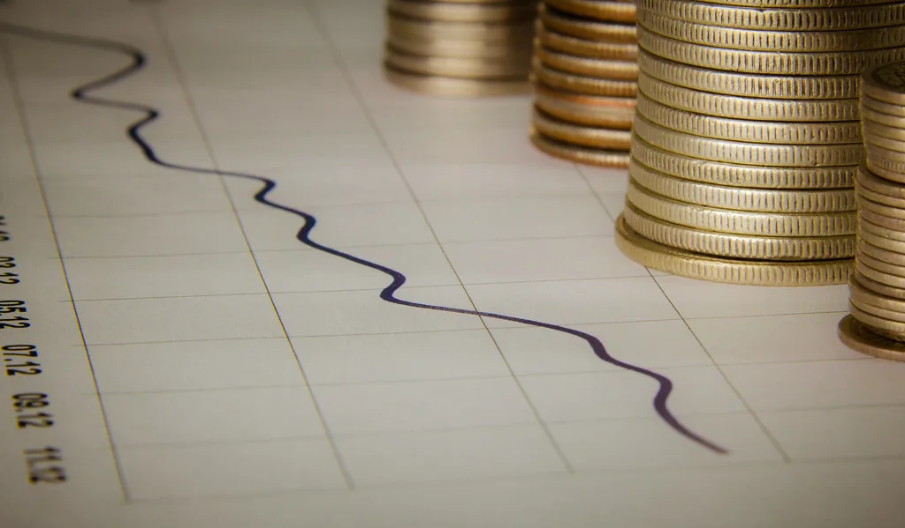

개미도 돌아섰다…삼성전자·SK하이닉스 9월 13조원 순매도 전환
올여름 내내 삼성전자와 SK하이닉스 주가를 떠받쳐 온 개인 투자자들이 9월 들어 일제히 매도 우위로 돌아선 것으로 나타났다. 9월 11일까지 집계된 수치를 보면 개인은 삼성전자를 5조2120억원, SK하이닉스를 7조8180억원 순매도해 두 종목 합산 순매도액이 13조300억원에 달했다. 개인 투자자가 두 반도체 대장주를 월간 기준으로 순매도한 것은 5개월 만이다. 지난 5월부터 8월까지 넉 달 연속 순매수하며 주가 하단을 받쳐온 흐름이 이달 들어 뒤집힌 셈이다.
같은 기간 외국인도 매도세에 가세했다. 외국인은 9월 11일까지 삼성전자와 SK하이닉스를 각각 1조9600억원씩 순매도한 것으로 집계됐다. 개인과 외국인이 동시에 매도 우위로 전환되면서 두 종목의 주가 흐름도 엇갈렸다. 같은 기간 삼성전자는 0.19% 하락하는 데 그쳤지만 SK하이닉스는 오히려 8.24% 오르는 등, 매도세 속에서도 종목별 온도차가 뚜렷하게 나타났다.

증권가에서는 이 같은 매도 전환의 배경으로 몇 가지 요인을 꼽는다. 우선 3분기 들어 코스피 상승 탄력이 다소 둔화하면서 국내 증시 전반에 대한 투자 심리가 위축된 점이 거론된다. 여기에 삼성전자·SK하이닉스 단일 종목에 투자하는 레버리지 상장지수펀드(ETF)에 대한 금융당국의 규제가 이어진 이후 관련 투자 수요가 줄어든 점도 영향을 미친 것으로 분석된다. 급락과 제한적인 반등이 반복되는 변동성 장세 속에서 개인 투자자들의 손실 사례가 늘어난 것도 추가 매수를 주저하게 만든 요인으로 지목된다.
실제로 두 종목 모두 2021년 고점 이후 이를 다시 넘어서기까지 3년 넘는 시간이 걸렸던 경험이 있어, 최근 하락 국면에서 개인 투자자들이 느끼는 부담이 만만치 않다는 평가가 나온다. 시장에서 추산한 자료에 따르면 개인 투자자는 최근 매수분 기준으로 SK하이닉스에서 약 57억달러, 삼성전자에서 약 24억달러 규모의 평가손실을 떠안고 있는 것으로 전해졌다. 고점 부근에서 뒤늦게 진입한 물량이 많았던 만큼 수익성 악화가 심리적 이탈로 이어지고 있다는 해석이다.

다만 반도체 업황 자체에 대한 비관론이 확산된 것은 아니라는 시각도 있다. 일부 증권가에서는 최근의 주가 조정을 실적 펀더멘털과는 무관한 수급 요인에 따른 일시적 되돌림으로 보고, 여전히 매수 관점을 유지해야 한다는 의견을 내놓고 있다. 특히 9월 이후 자사주 매입 여부가 두 회사 주가의 변수로 지목되면서, 기업 차원의 주주환원 정책이 개인 투자자들의 이탈을 얼마나 되돌릴 수 있을지가 관심사로 떠오르고 있다.
결국 이번 매도 전환은 반도체 업황에 대한 근본적인 회의라기보다는, 급등 이후 나타난 차익 실현과 레버리지 상품 규제, 손실 누적에 따른 투자 심리 위축이 복합적으로 작용한 결과로 풀이된다. 다만 국내 증시에서 두 종목이 차지하는 비중이 절대적인 만큼, 개인과 외국인의 동반 매도세가 장기화할 경우 코스피 전체 수급에도 부담으로 작용할 수 있다는 우려가 나온다. 향후 반도체 가격과 실적 발표, 자사주 매입 등 굵직한 이벤트들이 이어지는 만큼 매도세가 일시적 조정에 그칠지, 추세적 흐름으로 이어질지는 이달 말까지의 수급 동향을 지켜봐야 할 것으로 보인다.